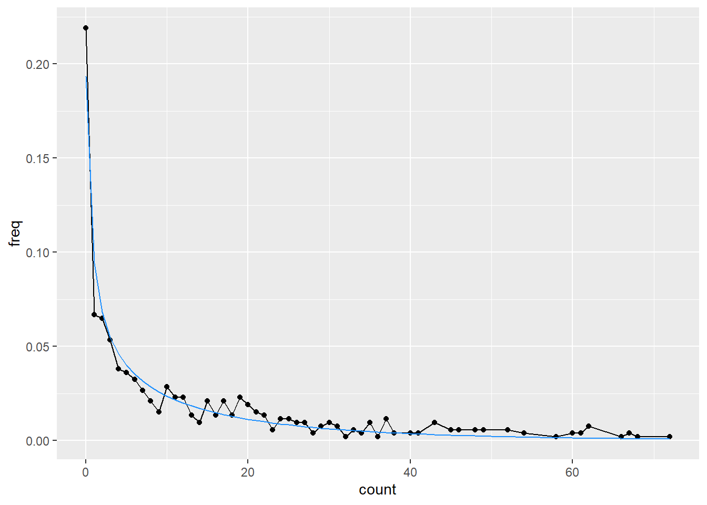

knitr::opts_knit$set(root.dir = rprojroot::find_rstudio_root_file())Negative binomial autocorr
library(tidyverse)
library(fitdistrplus)I have data that is almost certainly autocorrelated and negative binomial distributed. I’m analysing it elsewhere, but bringing over two simplified datasets here. Here, x is a spatial location, and n is a count at that location.
The questions are:
Can we estimate the negative binomial and autocorrelation parameters?
Can we simulate distributions with the same properties?
- This will require figuring out an expression for a negative binomial AR process and calculating the relevant parameters for each term.
I’m guessing that last bit is harder than the typical Gaussian AR sequence defined by \[X_{t+1} = \rho X_{t} + \epsilon_t\]
where if we have rho and the \(\mu\) and \(\sigma\) for the \(X\) distribution, we can calculate the appropriate \(\mu_\epsilon\) and \(\sigma_\epsilon\) using standard, well-known equations.
nb_a <- readRDS('data/negbin_testing/nb_testA.rds')
nb_s <- readRDS('data/negbin_testing/nb_testS.rds')The distributions
First, let’s look at the distributions we have, including their negative binomial fits and AC.
I could do this with dplyr and grouping, but trying to get to first principles here for the building and fitting.
Negative binomial fits
a_fit <- fitdist(nb_a$count, 'nbinom')
s_fit <- fitdist(nb_s$count, 'nbinom')freq_a <- nb_a |>
summarise(freq = n()/nrow(nb_a), .by = count) |>
arrange(count)
freq_s <- nb_s |>
summarise(freq = n()/nrow(nb_s), .by = count) |>
arrange(count)
a_dist <- tibble(count = 0:max(freq_a$count),
pdf = dnbinom(count,
size = a_fit$estimate[1],
mu = a_fit$estimate[2]))
s_dist <- tibble(count = 0:max(freq_s$count),
pdf = dnbinom(count,
size = s_fit$estimate[1],
mu = s_fit$estimate[2]))ggplot(freq_a, aes(x = count, y = freq)) +
geom_line() +
geom_point() +
geom_line(data = a_dist, aes(y = pdf), color = 'dodgerblue')
Note that while it looks like a big discrepancy in the tail here, there’s only a single data point past about 110.
ggplot(freq_s, aes(x = count, y = freq)) +
geom_line() +
geom_point() +
geom_line(data = s_dist, aes(y = pdf), color = 'dodgerblue')Autocorrelation
ac_a <- acf(nb_a$count)
ac_s <- acf(nb_s$count)Generating data
Now, we want to generate more data with those properties, e.g. for the ‘a’ data, negative binomial size 0.5073501, \(\mu\) 12.4241402, and \(\rho\) 0.5508952.
How do we do that?
There are a few papers on it, e.g. here and here and here. I’ll try to cobble something together from them. The paper by Gouriéroux and Lu (2019) looks the best so far, so let’s try that. It’s not simple though, so let’s figure out what we have and what we need to estimate and how. And then how to generate new realisations.
We have some process \(X_t\) that is negative binomial and autoregressive.
To get to \(X_{t+1}\) they go through an ‘intensity process’ \(Y_{t+1}\), which is a first-order AR gamma.
The define distributions
Poisson: \(P(\lambda)\)
Gamma: \(\gamma(\delta,\beta,c)\) where \(\delta\) is degree of freedom, \(\beta\) is non-centrality, and \(c\) is scale
Negative binomial: \(NB(\delta,\beta)\) where \(\delta\) is the df of the gamma and \(\beta\) is the scale of the intensity.
The appendix has details of those distributions, as well as some simulations, though I’ll need to sort through how they got those.
In various places (eq 2.1, 2.2, and appendix), they say \(\rho = \beta c\) and there is not a way to determine both, so set \(c = 1\). Thus, if I’m reading that correctly, \(\beta = \rho\) .
They do say that they use a parameterisation with \(\beta\) to get directly at the Poisson-Gamma mixture, and \(p = \frac{\beta}{\beta + 1}\) . The definiton of the negbin in R is given in help, but we are here using the \(\mu\) version because that’s what fitdistrplus returns. The size parameter in R (\(n\)) is defined as the “dispersion parameter (the shape parameter of the gamma mixing distribution)”, and so seems to equal . The \(\mu\) parameter has \(p = \frac{n}{n+\mu}\). The easiest thing to do probably is to translate back and forth through \(p\), where \(\beta= -\frac{p}{p-1}\) and \(\mu = \frac{n(1-p)}{p}\) .
So, that lets us move back and forth for the parameterisation notation, but leaves two important questions:
- How do we actually simulate?
- How does \(\beta\) simultanously define the \(p\) of the negative binomial and the autocorrelation \(\rho\)?
Simulation
Deal with 1 first.- before we try to match a distribution, try to simulate anything.
To simulate, they say “simulation of such trajectories is rather straightforward and it suffices to draw alternatively from Poisson and gamma, or Poisson, gamma and Wishart distributions”.
They use \(c = 1\), \(\beta = 0.69\) and \(\delta = 1.3\). Try that.
If I’m reading definition 1 correctly, we: start with an \(X_t\), then \(Y_{t+1}\) is \(\gamma(\delta+X_t, 0, c)\), and then \(X_{t+1}\) is \(Pois(\beta Y_{t+1})\).
Let’s try it.
First, some translation functions
p_from_beta <- function(beta) {
beta/(beta + 1)
}
p_from_mu <- function(mu, n) {
n / (n + mu)
}
beta_from_p <- function(p) {
-p/(p-1)
}
mu_from_p <- function(p, n) {
(n*(1-p))/p
}
beta_from_mu <- function(mu, n) {
p <- p_from_mu(mu, n)
beta_from_p(p)
}
mu_from_beta <- function(beta, n) {
p <- p_from_beta(beta)
mu_from_p(p, n)
}delta <- 1.3
beta <- 0.69
c_param <- 1
# just initialise the whole vector
X <- rnbinom(1000, size = 1.3, prob = p_from_beta(0.69))
Y <- X*NA
for (i in 2:length(X)) {
Y[i] <- rgamma(1, shape = delta+X[i-1], scale = c_param)
X[i] <- rpois(1, lambda = beta*Y[i])
}Check
sim_fit <- fitdist(X, 'nbinom')
sim_fitFitting of the distribution ' nbinom ' by maximum likelihood
Parameters:
estimate Std. Error
size 1.289241 0.09379129
mu 2.816988 0.09469248convert to beta to check. The n is right on, but the beta is way off.
beta_from_mu(mu = sim_fit$estimate[2], n = sim_fit$estimate[1]) |>
setNames('beta') beta
0.4576666 Similarly, if we ask what the mu we expect is, it’s way off the mu we estimate.
mu_from_beta(0.69, 1.3)[1] 1.884058What’s the ac? That’s about right.
sim_ac <- acf(X)sim_ac$acf[2][1] 0.6362625Is the issue that I’m using a gamma, but I’m supposed to be using a centered gamma? Well, a non-centered gamma with centering term = 0? Is the issue that c \neq 1?
Wait, property A.1 in appendix says unconditional dist of X is \(NB(\delta, \frac{\beta c}{1-\beta c})\).
transbeta <- beta/(1-beta)
transbeta[1] 2.225806mu_from_beta(transbeta, 1.3)[1] 0.584058Transbeta is kind of close, but still pretty far off? But did they just change the parameterisation mid-paper?
Do I need to try to use their fitting algorithm?
pmf_to_fit <- function(beta, delta, xt, xtm1) {
(beta^xt * gamma(delta + xt + xtm1)) /
(gamma(delta + xtm1) * (beta + 1)^(delta+xt+xtm1) * factorial(xt))
}
eachlog <- X * NA
eachlog[1] <- 0
for (i in 2:length(X)) {
eachlog[i] <- log(pmf_to_fit(beta, delta, X[i], X[i-1]))
}
logl <- sum(eachlog)I don’t think I can use optimize, since it’s single-parameter. Maybe nlm or optim. OR, can I estimate one some other way?
make_ll <- function(betadelta, series) {
eachlog <- series * NA
eachlog[1] <- 0
beta <- betadelta[1]
delta <- betadelta[2]
for (i in 2:length(series)) {
eachlog[i] <- log(pmf_to_fit(beta, delta, series[i], series[i-1]))
}
# optim likes to minimize, so use negative
logl <- -sum(eachlog)
return(logl)
}So that basically recovers the parameterisation. But is the issue still that we’re too bound up between rho and beta?
fit_sims <- optim(c(0.69, 1.3), make_ll, series = X)
fit_sims$par
[1] 0.6791434 1.3340810
$value
[1] 1940.01
$counts
function gradient
37 NA
$convergence
[1] 0
$message
NULLCan I plot those and see what I’m dealing with?
freq_x <- tibble(count = X) |>
summarise(freq = n()/length(X), .by = count) |>
arrange(count)
x_dist <- tibble(count = 0:max(freq_x$count),
pdf = dnbinom(count,
size = sim_fit$estimate[1],
mu = sim_fit$estimate[2]),
pdf_beta = dnbinom(count,
size = delta,
prob = p_from_beta(beta)),
pdf_beta_mu = dnbinom(count,
size = delta,
mu = mu_from_beta(beta, delta)),
pdf_beta_fit = dnbinom(count,
size = fit_sims$par[2],
prob = p_from_beta(fit_sims$par[1])),
pdf_beta_mu_fit = dnbinom(count,
size = fit_sims$par[2],
mu = mu_from_beta(fit_sims$par[1],
fit_sims$par[2]))) |>
left_join(freq_x)Joining with `by = join_by(count)`Well, the pdf is the only one that fits. Which makes sense, the others are pulling the mean too low, as we saw above. Clearly that’s not an artifact.
x_dist |>
pivot_longer(-count) |>
ggplot(aes(x = count, y = value, color = name)) +
geom_line()Does the optim fit work? Even if the fits are wrong, are we recovering the right distribution? They’re close, but not exact, though that’s expected. And the mu vs p parameterisations are dead on.
x_dist |>
pivot_longer(-count) |>
filter(grepl("_", name)) |>
ggplot(aes(x = count, y = value, color = name, linetype = name)) +
geom_line(linewidth = 2)So, where to from here? If we play with C, does that help? Ie if \(\rho = \beta c\), but the negbin only has beta and the gamma only has c, can we get there?
ie can we do something roundabout like saying we know rho, we can get the beta from mu from the overall negbin, then c has to be obtainable from that?, i.e. \(c = \frac{\rho}{\beta}\).
rho = 0.69
mu = 2.8
delta = 1.3
beta = beta_from_mu(mu, delta)
c_param = rho/beta# just initialise the whole vector
X <- rnbinom(1000, size = delta, mu = mu)
Y <- X*NA
for (i in 2:length(X)) {
Y[i] <- rgamma(1, shape = delta+X[i-1], scale = c_param)
X[i] <- rpois(1, lambda = beta*Y[i])
}sim_fit <- fitdist(X, 'nbinom')
sim_fitFitting of the distribution ' nbinom ' by maximum likelihood
Parameters:
estimate Std. Error
size 1.540803 0.11666398
mu 2.892248 0.09122759sim_ac <- acf(X)
sim_ac$acf[2][1] 0.6656559HOLY COW DID THAT JUST WORK???
I should also recover rho and delta with the optim. Pretty decent.
fit_sims <- optim(c(0.69, 1.3), make_ll, series = X)
fit_sims$par
[1] 0.6682954 1.4363979
$value
[1] 1923.407
$counts
function gradient
41 NA
$convergence
[1] 0
$message
NULLPlot again
freq_x <- tibble(count = X) |>
summarise(freq = n()/length(X), .by = count) |>
arrange(count)
x_dist <- tibble(count = 0:max(freq_x$count),
pdf = dnbinom(count,
size = sim_fit$estimate[1],
mu = sim_fit$estimate[2]),
pdf_mu = dnbinom(count, size = delta, mu = mu),
pdf_beta = dnbinom(count,
size = delta,
prob = p_from_beta(beta)),
pdf_beta_mu = dnbinom(count,
size = delta,
mu = mu_from_beta(beta, delta)),
pdf_beta_fit = dnbinom(count,
size = fit_sims$par[2],
prob = p_from_beta(fit_sims$par[1])),
pdf_beta_mu_fit = dnbinom(count,
size = fit_sims$par[2],
mu = mu_from_beta(fit_sims$par[1],
fit_sims$par[2]))) |>
left_join(freq_x)Joining with `by = join_by(count)`Plot, but too much overplotting, so leave the data on there and wrap the estimates. They all work except pdf_beta_fit and pdf_beta_mu_fit, which are the ones that use fit_sims (i.e. the likelihood fit from the paper).
x_dist |>
pivot_longer(-count) |>
filter(name != 'freq') |>
ggplot(aes(x = count, y = value, color = name)) +
geom_line() +
geom_line(data = x_dist, aes(y = freq), color = 'black') +
facet_wrap('name')So, now to develop a clean method and test with data.
Clean simulation given \(\mu\) or \(p\), \(n\) (\(\delta\)), and \(\rho\)
So, we want to be able to fit an autocorrelated negative binomial distribution given the distribution of the overall distribution and the AR(1) \(\rho\).
We’ll use R’s nbinom parameterisations, which use size and either prob or mu. I will refer to size as \(\delta\) because we are using it here as the dispersion parameter (shape parameter of the gamma mixing distribution). Like R, I’ll allow either prob or mu, though in practice I expect mu will be more common, since it is what’s returned by fitdistrplus::fitdist(), and so will be easier to use when we have empirical distributions and for checking.
With a set of those parameters,
rho <- 0.75
delta <- 1.5
mu <- 5Then we define a function to generate the AR(1) sequence
rnbinomAR <- function(n, size, prob, mu, rho, return_Y = FALSE) {
if (!missing(prob) & !missing(mu)) {
rlang::abort('Use either `prob` or `mu`')
}
if (!missing(prob)) {
beta <- beta_from_p(prob)
}
if (!missing(prob)) {
beta <- beta_from_mu(mu, size)
}
# This differs from Gourieroux & Lu, as theirs (c = 1) yielded incorrect means.
c_param = rho/beta
# just initialise the whole vector
if (!missing(prob)) {
X <- rnbinom(n, size = size, prob = prob)
}
if (!missing(mu)) {
X <- rnbinom(n, size = size, mu = mu)
}
# Initialise the intensity process
Y <- X*NA
# Build the sequence one step at a time according to Gourieroux & Lu Definition 1.
for (i in 2:length(X)) {
Y[i] <- rgamma(1, shape = size+X[i-1], scale = c_param)
X[i] <- rpois(1, lambda = beta*Y[i])
}
if (returnY) {
return(list(X = X, Y = Y))
} else {
return(X)
}
}A standard set of checks are then to fit that and return the mu, size, and rho. Could do the acf plot too, but that’s just using acf.
fit_nbinomAR <- function(X) {
# check the size and mu
musize <- fitdistrplus::fitdist(X, 'nbinom')
# check the AR
ac_x1 <- acf(X)$acf[2]
# return tibble
nbinar_est <- tibble::tibble(term = c(names(musize$estimate), 'rho'),
estimate = c(musize$estimate, ac_x1),
std_error = c(musize$sd, NA))
return(nbinar_est)
}Standard checks using the frequencies and then a chi square or a plot. These just check the distribution, not the AR. We’ll have to take the rho estimation from acf’s word on that.
nbin_emp_pdf <- function(X, size, prob, mu) {
freq_x <- tibble::tibble(count = X) |>
dplyr::summarise(freq = dplyr::n()/length(X),
.by = count) |>
dplyr::arrange(count)
if (!missing(prob) & !missing(mu)) {
rlang::abort('Use either `prob` or `mu`')
}
if (!missing(prob)) {
x_dist <- tibble::tibble(count = 0:max(freq_x$count),
pmf = dnbinom(count,
size = size,
prob = prob))
}
if (!missing(prob)) {
x_dist <- tibble::tibble(count = 0:max(freq_x$count),
pmf = dnbinom(count,
size = size,
mu = mu))
}
# Do I want to be able to do this for the *given* params and the *fitted* params? Or just do it twice? I think probably do it twice, otherwise this gets VERY specific.
# Join into one dataframe
x_dist <- x_dist |>
dplyr::left_join(freq_x) |>
tidyr::pivot_longer(-count)
return(x_dist)
}References
Gouriéroux, Christian, and Yang Lu. 2019. “Negative Binomial Autoregressive Process with Stochastic Intensity.” Journal of Time Series Analysis 40 (2): 225–47. https://doi.org/10.1111/jtsa.12441.